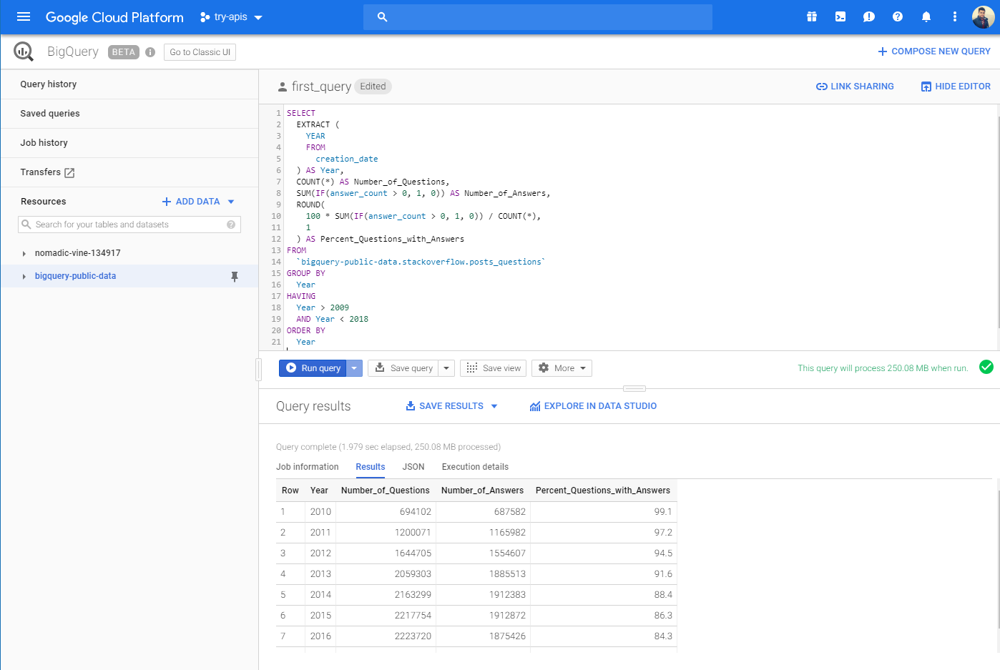

Approach
Experiences and obstacles faced throughout the project
Behind the Scenes
The Approach
For this topic, there were resources on Google Cloud Platform that could be imported into a very useful tool to query the data based on the metrics which are needed.
Through Google BigQuery, I was able to extract the information through the use of SQL queries utilizing the specific tables that contained the relational aspects of the attributes I needed. I exported this data as CSV files.
-- Google's BigQuery UI (Beta) --
Next, I imported the extracted CSV files containing the StackOverflow results into Plotly Chart Studio, for which I was able to build plots, graphs, and charts to visualize the data in a meaningful way.
-- Plotly Chart Studio --

Experience
Most of the time spent on this analysis project was the transformation phase. After identifying and extracting the data sets I needed, building the queries to manipulate them was the most tedious and the difficult part of this.
There were a couple of datasets on Stackoverflow information that I surely wish to further explore and draw more analysis on. It’s very useful to know the directions in which certain trends are going in hopes of deriving more data-related insights.
Using Plotly's Chart Studio reminded me of the experience I had with Tableau. The widget generation, the transformations, theming, and shortcuts are very similar to that of Tableau's features.
Obstacles
I could not find certain data that I had other questions for such as the url references on posts and “marked” answers.
It must be taken into account of deleted posts which actually should be included in this case because we are interested in certain metrics. A post is likely to be deleted if it’s a bad question, thus not getting a higher number of answers, score, and favorites.
With more time, I would have answered other questions such as - “What time of the day are users people typically posting and answering questions?” or even more specifically, “Which metrics determine a higher and a more diverse badge count for users who answer many questions?”
Presentation
Learn more on the DataStory